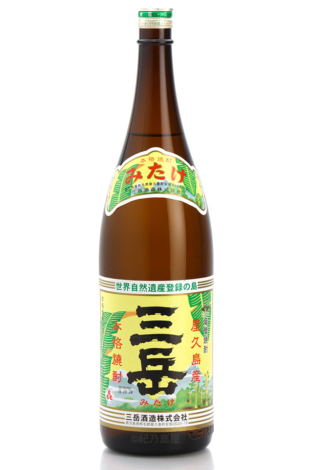
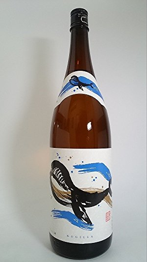
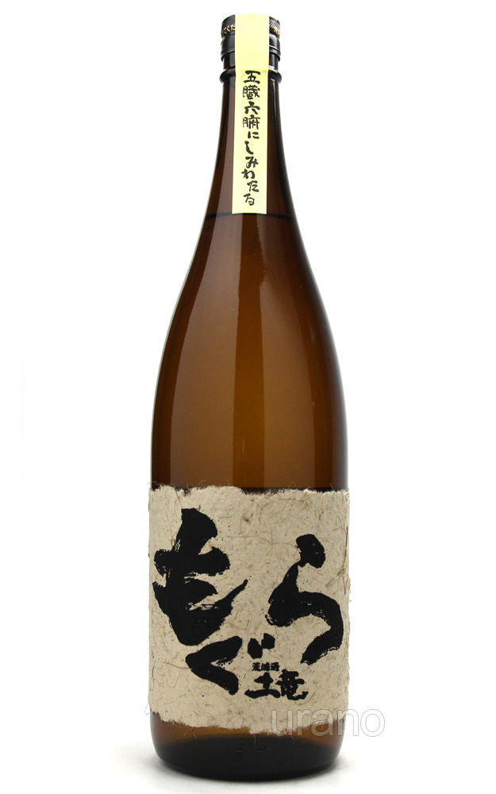
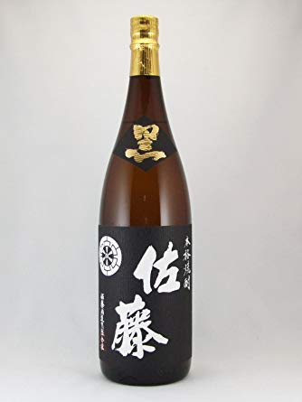
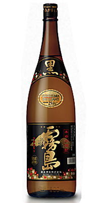
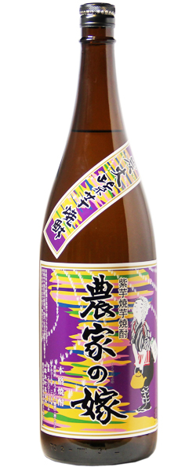

| <芋焼酎> | |
| 三岳 | |
|  | 昔ながらの白麹仕込みで飽きのこないオーソドックスな芋焼酎。最近手に入りづらくなり希少価値が高くなってきています。 |
| くじら | |
|  | 大海酒造さんの代表的な一本。芋焼酎としてはスッキリとした味わい。大海酒造さんの焼酎はどれもスッキリとしていて飲みやすいのが特徴です。 |
| もぐら | |
|  | 低価格で芋臭さが存分に味わえる一本。コンビニにも売っているところが多く、手に入りやすい。 |
| 佐藤の黒麹 | |
|  | 黒麹のキレの良さがよく出ています。白麹バージョンもあります。個人的には黒麹バージョンの方が個性があって完成度が高いと思います。 |
| 黒霧島 | |
|  | 安くてどこにでも置いてある定番の焼酎。 バランスの良い味でコスパに優れた一本 |
| 農家の嫁 紫芋 | |
|  | 紫芋を使った焼き芋焼酎です。紫芋を使った焼酎は甘みが強いです。 |